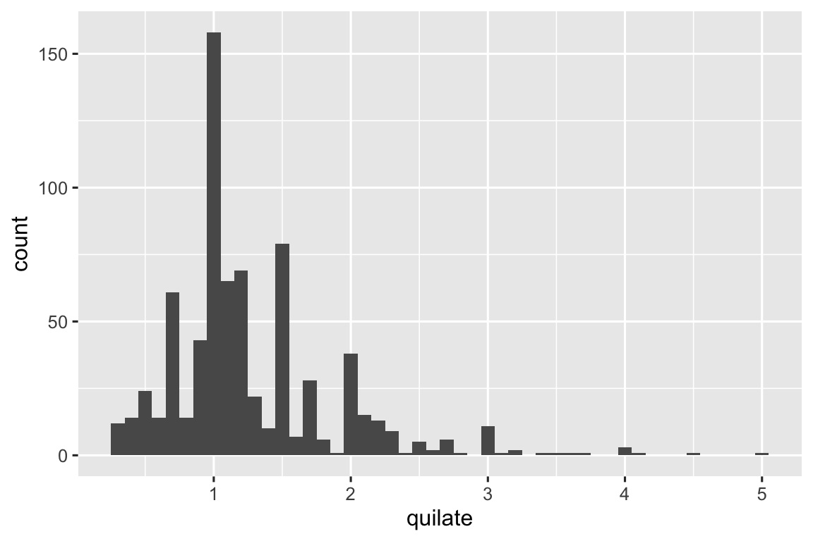

26 Iteração
26.1 Introdução
Neste capítulo, você aprenderá ferramentas para iteração, executando repetidamente a mesma ação em objetos diferentes. A iteração em R geralmente tende a parecer bastante diferente de outras linguagens de programação porque grande parte dela está implícita e a obtemos “de graça”. Por exemplo, se você deseja duplicar um vetor numérico x no R, você pode simplesmente escrever 2 * x. Na maioria das outras linguagens, você precisaria duplicar explicitamente cada elemento de x usando algum tipo de laço for (for loop).
Este livro já lhe deu um pequeno, mas poderoso número de ferramentas que executam a mesma ação para múltiplas “coisas”:
-
facet_wrap()efacet_grid()desenham um gráfico para cada subconjunto. -
group_by()junto comsummarize()calcula estatísticas resumo para cada subconjunto. -
unnest_wider()eunnest_longer()criam novas linhas e colunas para cada elemento de uma colunas-lista (list-column).
Agora é hora de aprender algumas ferramentas mais gerais, geralmente chamadas de ferramentas de programação funcional (functional programming) porque são construídas em torno de funções que recebem outras funções como entradas. Aprender programação funcional pode facilmente se tornar bastante abstrato, mas neste capítulo manteremos as coisas concretas, concentrando-nos em três tarefas comuns: modificar múltiplas colunas, ler vários arquivos e salvar vários objetos.
26.1.1 Pré-requisitos
Neste capítulo, focaremos nas ferramentas fornecidas pelos pacotes dplyr e purrr, ambos membros centrais do tidyverse. Você já viu o dplyr antes, mas o purrr é novo. Usaremos apenas algumas funções do purrr neste capítulo, mas é um ótimo pacote para explorar à medida que você aprimora suas habilidades de programação. Usaremos também o pacote dados e seu conjunto de dados diamante.
26.2 Modificando múltiplas colunas
Imagine que você tem esse tibble simples e deseja contar o número de observações e calcular a mediana de cada coluna.
Você poderia fazer isso copiando e colando:
Isso quebra nossa regra geral de nunca copiar e colar mais de duas vezes, e você pode imaginar que isso será muito tedioso se você tiver dezenas ou até centenas de colunas. Em vez disso, você pode usar a função across():
across() tem três argumentos particularmente importantes, que discutiremos em detalhes nas seções seguintes. Você usará os dois primeiros sempre que usar across(): o primeiro argumento, .cols, especifica quais colunas você deseja iterar, e o segundo argumento, .fns, especifica o que fazer com cada coluna. Você pode usar o argumento .names quando precisar de controle adicional sobre os nomes das colunas de saída, o que é particularmente importante quando você usa across() com mutate(). Também discutiremos duas variações importantes, if_any() e if_all(), que funcionam com filter().
26.2.1 Selecionando colunas com .cols
O primeiro argumento para across(), .cols, seleciona as colunas a serem transformadas. Isso usa as mesmas especificações de select(), Seção 3.3.2, então você pode usar funções como starts_with() e ends_with() para selecionar colunas com base em seus nomes.
Existem duas técnicas de seleção adicionais que são particularmente úteis para across(): everything() e where(). everything() (tudo/todas em inglês) é direto ao ponto: seleciona todas as colunas (não agrupadas):
df <- tibble(
grp = sample(2, 10, replace = TRUE),
a = rnorm(10),
b = rnorm(10),
c = rnorm(10),
d = rnorm(10)
)
df |>
group_by(grp) |>
summarize(across(everything(), median))
#> # A tibble: 2 × 5
#> grp a b c d
#> <int> <dbl> <dbl> <dbl> <dbl>
#> 1 1 -0.0935 -0.0163 0.363 0.364
#> 2 2 0.312 -0.0576 0.208 0.565Observe que as colunas de agrupamento (grp aqui) não estão incluídas em across(), porque são preservadas automaticamente por summarize().
where() permite selecionar colunas com base em seu tipo:
-
where(is.numeric)seleciona todas as colunas numéricas. -
where(is.character)seleciona todas as colunas de string. -
where(is.Date)seleciona todas as colunas de data. -
where(is.POSIXct)seleciona todas as colunas de data e horário (date-time). -
where(is.logical)seleciona todas as colunas lógicas.
Assim como outros seletores, você pode combiná-los com álgebra booleana. Por exemplo, !where(is.numeric) seleciona todas as colunas não numéricas e starts_with("a") & where(is.logical) seleciona todas as colunas lógicas cujo nome começa com “a”.
26.2.2 Chamando uma única função
O segundo argumento para across() define como cada coluna será transformada. Em casos simples, como acima, esta será uma única função existente. Este é um recurso muito especial do R: estamos passando uma função (median, mean, str_flatten, …) para outra função (across). Esta é uma das características que torna R uma linguagem de programação funcional.
É importante notar que estamos passando esta função para across(), então across() pode chamá-la; não a estamos chamando nós mesmos. Isso significa que o nome da função nunca deve ser seguido por (). Se você esquecer, receberá um erro:
df |>
group_by(grp) |>
summarize(across(everything(), median()))
#> Error in `summarize()`:
#> ℹ In argument: `across(everything(), median())`.
#> Caused by error in `median.default()`:
#> ! argument "x" is missing, with no defaultEste erro surge porque você está chamando a função sem entrada, por exemplo:
median()
#> Error in median.default(): argument "x" is missing, with no default26.2.3 Chamando múltiplas funções
Em casos mais complexos, talvez você queira fornecer argumentos adicionais ou executar diversas transformações. Vamos motivar este problema com um exemplo simples: o que acontece se tivermos alguns valores faltantes (missing values) em nossos dados? median() propaga esses valores ausentes, fornecendo um resultado não ideal:
rnorm_na <- function(n, n_na, mean = 0, sd = 1) {
sample(c(rnorm(n - n_na, mean = mean, sd = sd), rep(NA, n_na)))
}
df_faltantes <- tibble(
a = rnorm_na(5, 1),
b = rnorm_na(5, 1),
c = rnorm_na(5, 2),
d = rnorm(5)
)
df_faltantes |>
summarize(
across(a:d, median),
n = n()
)
#> # A tibble: 1 × 5
#> a b c d n
#> <dbl> <dbl> <dbl> <dbl> <int>
#> 1 NA NA NA 1.15 5Seria bom se pudéssemos passar na.rm = TRUE para median() para remover esses valores ausentes. Para fazer isso, em vez de chamar median() diretamente, precisamos criar uma nova função que chame median() com os argumentos desejados:
Isso é um tanto detalhado ou longo demais, então R vem com um atalho útil: para esse tipo de função descartável, ou anônima1, você pode substituir function por \ 2 :
Em ambos os casos, across() efetivamente se expande para o código a seguir:
Quando removemos os valores ausentes de median(), seria bom saber quantos valores foram removidos. Podemos descobrir isso fornecendo duas funções para across(): uma para calcular a mediana e outra para contar os valores faltantes. Você fornece múltiplas funções usando uma lista nomeada (named-list) para .fns:
df_faltantes |>
summarize(
across(a:d, list(
mediana = \(x) median(x, na.rm = TRUE),
n_faltante = \(x) sum(is.na(x))
)),
n = n()
)
#> # A tibble: 1 × 9
#> a_mediana a_n_faltante b_mediana b_n_faltante c_mediana c_n_faltante
#> <dbl> <int> <dbl> <int> <dbl> <int>
#> 1 0.139 1 -1.11 1 -0.387 2
#> # ℹ 3 more variables: d_mediana <dbl>, d_n_faltante <int>, n <int>Se você olhar com atenção, poderá intuir que as colunas são nomeadas usando uma especificação da função glue (Seção 14.3.2) como {.col}_{.fn} onde .col é o nome da coluna original e . fn é o nome da função. Isso não é uma coincidência! Como você aprenderá na próxima seção, você pode usar o argumento .names para fornecer sua própria especificação da função glue.
26.2.4 Nomes de colunas
O resultado de across() é nomeado de acordo com a especificação fornecida no argumento .names. Poderíamos especificar o nosso próprio argumento se quiséssemos que o nome da função viesse primeiro3:
df_faltantes |>
summarize(
across(
a:d,
list(
mediana = \(x) median(x, na.rm = TRUE),
n_faltante= \(x) sum(is.na(x))
),
.names = "{.fn}_{.col}"
),
n = n(),
)
#> # A tibble: 1 × 9
#> mediana_a n_faltante_a mediana_b n_faltante_b mediana_c n_faltante_c
#> <dbl> <int> <dbl> <int> <dbl> <int>
#> 1 0.139 1 -1.11 1 -0.387 2
#> # ℹ 3 more variables: mediana_d <dbl>, n_faltante_d <int>, n <int>O argumento .names é particularmente importante quando você usa across() com mutate(). Por padrão, a saída de across() recebe os mesmos nomes das entradas. Isso significa que across() dentro de mutate() substituirá as colunas existentes. Por exemplo, aqui usamos coalesce() para substituir NAs por 0:
Se você quiser criar novas colunas, você pode usar o argumento .names para dar novos nomes à saída:
df_faltantes |>
mutate(
across(a:d, \(x) coalesce(x, 0), .names = "{.col}_na_zero")
)
#> # A tibble: 5 × 8
#> a b c d a_na_zero b_na_zero c_na_zero d_na_zero
#> <dbl> <dbl> <dbl> <dbl> <dbl> <dbl> <dbl> <dbl>
#> 1 0.434 -1.25 NA 1.60 0.434 -1.25 0 1.60
#> 2 NA -1.43 -0.297 0.776 0 -1.43 -0.297 0.776
#> 3 -0.156 -0.980 NA 1.15 -0.156 -0.980 0 1.15
#> 4 -2.61 -0.683 -0.785 2.13 -2.61 -0.683 -0.785 2.13
#> 5 1.11 NA -0.387 0.704 1.11 0 -0.387 0.70426.2.5 Filtrando
across() é uma ótima combinação para summarize() e mutate() mas é mais estranho de usar com filter(), porque você normalmente combina múltiplas condições com | ou &. É claro que across() pode ajudar a criar múltiplas colunas lógicas, mas e depois? Por isso, dplyr fornece duas variantes de across() chamadas if_any() e if_all():
# o mesmo que df_faltantes |> filter(is.na(a) | is.na(b) | is.na(c) | is.na(d))
df_faltantes |> filter(if_any(a:d, is.na))
#> # A tibble: 4 × 4
#> a b c d
#> <dbl> <dbl> <dbl> <dbl>
#> 1 0.434 -1.25 NA 1.60
#> 2 NA -1.43 -0.297 0.776
#> 3 -0.156 -0.980 NA 1.15
#> 4 1.11 NA -0.387 0.704
# o mesmo que df_faltantes |> filter(is.na(a) & is.na(b) & is.na(c) & is.na(d))
df_faltantes |> filter(if_all(a:d, is.na))
#> # A tibble: 0 × 4
#> # ℹ 4 variables: a <dbl>, b <dbl>, c <dbl>, d <dbl>
26.2.6 across() em funções
across() é particularmente útil para programar porque permite operar em múltiplas colunas. Por exemplo, Jacob Scott usa esta pequena função auxiliar que agrega um monte de funções do pacote lubridate para expandir todas as colunas de data em colunas de ano, mês e dia:
expande_datas <- function(df) {
df |>
mutate(
across(where(is.Date), list(ano = year, mes = month, dia = mday))
)
}
df_data <- tibble(
nome = c("Amy", "Bob"),
data = ymd(c("2009-08-03", "2010-01-16"))
)
df_data |>
expande_datas()
#> # A tibble: 2 × 5
#> nome data data_ano data_mes data_dia
#> <chr> <date> <dbl> <dbl> <int>
#> 1 Amy 2009-08-03 2009 8 3
#> 2 Bob 2010-01-16 2010 1 16across() também facilita o fornecimento de múltiplas colunas em um único argumento porque o primeiro argumento usa seleção organizada (tidy-selection); você só precisa se lembrar de abraçar (embrace) esse argumento, conforme discutimos no ?sec-abracing. Por exemplo, esta função calculará as médias das colunas numéricas por padrão. Mas ao fornecer o segundo argumento você pode optar por sumarizar apenas as colunas selecionadas:
summariza_medias <- function(df, summary_vars = where(is.numeric)) {
df |>
summarize(
across({{ summary_vars }}, \(x) mean(x, na.rm = TRUE)),
n = n(),
.groups = "drop"
)
}
diamante |>
group_by(corte) |>
summariza_medias()
#> # A tibble: 5 × 9
#> corte preco quilate profundidade tabela x y z n
#> <ord> <dbl> <dbl> <dbl> <dbl> <dbl> <dbl> <dbl> <int>
#> 1 Justo 4359. 1.05 64.0 59.1 6.25 6.18 3.98 1610
#> 2 Bom 3929. 0.849 62.4 58.7 5.84 5.85 3.64 4906
#> 3 Muito Bom 3982. 0.806 61.8 58.0 5.74 5.77 3.56 12082
#> 4 Premium 4584. 0.892 61.3 58.7 5.97 5.94 3.65 13791
#> 5 Ideal 3458. 0.703 61.7 56.0 5.51 5.52 3.40 21551
diamante |>
group_by(corte) |>
summariza_medias(c(quilate, x:z))
#> # A tibble: 5 × 6
#> corte quilate x y z n
#> <ord> <dbl> <dbl> <dbl> <dbl> <int>
#> 1 Justo 1.05 6.25 6.18 3.98 1610
#> 2 Bom 0.849 5.84 5.85 3.64 4906
#> 3 Muito Bom 0.806 5.74 5.77 3.56 12082
#> 4 Premium 0.892 5.97 5.94 3.65 13791
#> 5 Ideal 0.703 5.51 5.52 3.40 21551
26.2.7 Vs pivot_longer()
Antes de continuarmos, vale a pena apontar uma conexão interessante entre across() e pivot_longer() (Seção 5.3). Em muitos casos, você realiza os mesmos cálculos primeiro pivotando (pivoting) os dados e depois executando as operações por grupo em vez de por coluna. Por exemplo, veja esta sumarização multifuncional:
Poderíamos calcular os mesmos valores pivoteando por comprimento (pivoting longer) e sumarizando:
longo <- df |>
pivot_longer(a:d) |>
group_by(name) |>
summarize(
mediana = median(value),
media = mean(value)
)
longo
#> # A tibble: 4 × 3
#> name mediana media
#> <chr> <dbl> <dbl>
#> 1 a 0.0380 0.205
#> 2 b -0.0163 0.0910
#> 3 c 0.260 0.0716
#> 4 d 0.540 0.508E se você quisesse a mesma estrutura de across() você poderia pivotear novamente:
longo |>
pivot_wider(
names_from = name,
values_from = c(mediana, media),
names_vary = "slowest",
names_glue = "{name}_{.value}"
)
#> # A tibble: 1 × 8
#> a_mediana a_media b_mediana b_media c_mediana c_media d_mediana d_media
#> <dbl> <dbl> <dbl> <dbl> <dbl> <dbl> <dbl> <dbl>
#> 1 0.0380 0.205 -0.0163 0.0910 0.260 0.0716 0.540 0.508Esta é uma técnica útil para conhecer porque às vezes você encontrará um problema que atualmente não é possível resolver com across(): quando você tem grupos de colunas com os quais você deseja realizar cálculos simultaneamente. Por exemplo, imagine que nosso data frame contém valores e pesos e queremos calcular uma média ponderada:
Atualmente, não há como fazer isso com across()4, mas é relativamente simples com pivot_longer():
df_longo <- df_pareado |>
pivot_longer(
everything(),
names_to = c("grupo", ".value"),
names_sep = "_"
)
df_longo
#> # A tibble: 40 × 3
#> grupo val pesos
#> <chr> <dbl> <dbl>
#> 1 a 0.715 0.518
#> 2 b -0.709 0.691
#> 3 c 0.718 0.216
#> 4 d -0.217 0.733
#> 5 a -1.09 0.979
#> 6 b -0.209 0.675
#> # ℹ 34 more rows
df_longo |>
group_by(grupo) |>
summarize(media = weighted.mean(val, pesos))
#> # A tibble: 4 × 2
#> grupo media
#> <chr> <dbl>
#> 1 a 0.126
#> 2 b -0.0704
#> 3 c -0.360
#> 4 d -0.248Se necessário, você poderia usar a pivot_wider() e voltar ao formato original.
26.2.8 Exercícios
-
Pratique suas habilidades na função
across():Calculando o número de valores únicos em cada coluna de
dados::pinguins.Calculando a média de cada coluna em
dados::mtcarros.Agrupando
diamanteporcorte,transparenciaecor, contando o número de observações e calculando a média de cada coluna numérica
O que acontece se você usar uma lista de funções em
across(), mas não as nomear? Como a saída é nomeada?Ajuste
expand_dates()para remover automaticamente as colunas de data após elas terem sido expandidas. Você precisa adotar algum argumento?-
Explique o que cada etapa do pipeline faz nesta função. De qual recurso especial de
where()estamos nos aproveitando?
26.3 Lendo múltiplos arquivos
Na seção anterior, você aprendeu como usar dplyr::across() para repetir uma transformação em múltiplas colunas. Nesta seção, você aprenderá como usar purrr::map() para fazer algo em cada arquivo em um diretório. Vamos começar com um pouco de motivação: imagine que você tem um diretório cheio de planilhas do Excel5 que deseja ler. Você poderia fazer isso copiando e colando:
dado2019 <- readxl::read_excel("data/y2019.xlsx")
dado2020 <- readxl::read_excel("data/y2020.xlsx")
dado2021 <- readxl::read_excel("data/y2021.xlsx")
dado2022 <- readxl::read_excel("data/y2022.xlsx")E então use a dplyr::bind_rows() para combiná-los todos juntos:
dados_todos <- bind_rows(dados2019, dados2020, dados2021, dados2022)Você pode imaginar que isso se tornaria entediante rapidamente, especialmente se você tivesse centenas de arquivos, não apenas quatro. As seções a seguir mostram como automatizar esse tipo de tarefa. Existem três etapas básicas: use list.files() para listar todos os arquivos em um diretório, depois use purrr::map() para ler cada um deles em uma lista e, em seguida, use purrr::list_rbind( ) para combiná-los em um único data frame. Discutiremos então como você pode lidar com situações de crescente heterogeneidade, onde não é possível fazer exatamente a mesma coisa com todos os arquivos.
26.3.1 Listando arquivos do diretório
Como o nome sugere, list.files() lista os arquivos em um diretório. Você quase sempre usará três argumentos:
O primeiro argumento,
path, é o diretório onde procurar.patterné uma expressão regular usada para filtrar os nomes dos arquivos. O padrão mais comum é algo como[.]xlsx$ou[.]csv$para encontrar todos os arquivos com uma extensão especificada.full.namesdetermina se o nome do diretório deve ou não ser incluído na saída. Você quase sempre quer que isso sejaTRUE.
Para tornar nosso exemplo motivador mais concreto, este livro contém uma pasta com 12 planilhas Excel contendo dados do pacote gapminder. Cada arquivo contém dados referentes a um ano para 142 países. Podemos listá-los todos com a chamada apropriada para list.files():
caminhos <- list.files("data/gapminder", pattern = "[.]xlsx$", full.names = TRUE)
caminhos
#> [1] "data/gapminder/1952.xlsx" "data/gapminder/1957.xlsx"
#> [3] "data/gapminder/1962.xlsx" "data/gapminder/1967.xlsx"
#> [5] "data/gapminder/1972.xlsx" "data/gapminder/1977.xlsx"
#> [7] "data/gapminder/1982.xlsx" "data/gapminder/1987.xlsx"
#> [9] "data/gapminder/1992.xlsx" "data/gapminder/1997.xlsx"
#> [11] "data/gapminder/2002.xlsx" "data/gapminder/2007.xlsx"26.3.2 Listas
Agora que temos esses 12 arquivos, poderíamos chamar read_excel() 12 vezes para obter 12 data frames:
gapminder_1952 <- readxl::read_excel("data/gapminder/1952.xlsx")
gapminder_1957 <- readxl::read_excel("data/gapminder/1957.xlsx")
gapminder_1962 <- readxl::read_excel("data/gapminder/1962.xlsx")
...,
gapminder_2007 <- readxl::read_excel("data/gapminder/2007.xlsx")Entretanto, colocar cada planilha em sua própria variável vai dificultar o trabalho com elas alguns passos adiante. Em vez disso, será mais fácil trabalhar com elas se as colocarmos em um único objeto. Uma lista é a ferramenta perfeita para este trabalho:
arquivos <- list(
readxl::read_excel("data/gapminder/1952.xlsx"),
readxl::read_excel("data/gapminder/1957.xlsx"),
readxl::read_excel("data/gapminder/1962.xlsx"),
...,
readxl::read_excel("data/gapminder/2007.xlsx")
)Agora que você tem esses data frames em uma lista, como retirar algum deles? Você pode usar arquivos[[i]] para extrair o iésimo elemento:
arquivos[[3]]
#> # A tibble: 142 × 5
#> country continent lifeExp pop gdpPercap
#> <chr> <chr> <dbl> <dbl> <dbl>
#> 1 Afghanistan Asia 32.0 10267083 853.
#> 2 Albania Europe 64.8 1728137 2313.
#> 3 Algeria Africa 48.3 11000948 2551.
#> 4 Angola Africa 34 4826015 4269.
#> 5 Argentina Americas 65.1 21283783 7133.
#> 6 Australia Oceania 70.9 10794968 12217.
#> # ℹ 136 more rowsVoltaremos a ver [[ com mais detalhes no Seção 27.3.
26.3.3 purrr::map() e list_rbind()
O código para coletar esses data frames de uma lista “manualmente” é basicamente tão tedioso de digitar quanto o código que lê os arquivos um por um. Felizmente, podemos usar purrr::map() para fazer uso ainda melhor do nosso vetor caminhos (paths). map() é semelhante aacross(), mas em vez de fazer algo em cada coluna em um data frame, ele faz algo em cada elemento de um vetor.map(x, f) é uma abreviação de:
list(
f(x[[1]]),
f(x[[2]]),
...,
f(x[[n]])
)Portanto, podemos usar map() para obter uma lista de 12 data frames:
arquivos <- map(caminhos, readxl::read_excel)
length(arquivos)
#> [1] 12
arquivos[[1]]
#> # A tibble: 142 × 5
#> country continent lifeExp pop gdpPercap
#> <chr> <chr> <dbl> <dbl> <dbl>
#> 1 Afghanistan Asia 28.8 8425333 779.
#> 2 Albania Europe 55.2 1282697 1601.
#> 3 Algeria Africa 43.1 9279525 2449.
#> 4 Angola Africa 30.0 4232095 3521.
#> 5 Argentina Americas 62.5 17876956 5911.
#> 6 Australia Oceania 69.1 8691212 10040.
#> # ℹ 136 more rows(Esta é outra estrutura de dados que não é exibida de forma particularmente compacta com str(), então você pode querer carregá-la no RStudio e inspecioná-la com View()).
Agora podemos usar purrr::list_rbind() para combinar essa lista de data frames em um único data frame:
list_rbind(arquivos)
#> # A tibble: 1,704 × 5
#> country continent lifeExp pop gdpPercap
#> <chr> <chr> <dbl> <dbl> <dbl>
#> 1 Afghanistan Asia 28.8 8425333 779.
#> 2 Albania Europe 55.2 1282697 1601.
#> 3 Algeria Africa 43.1 9279525 2449.
#> 4 Angola Africa 30.0 4232095 3521.
#> 5 Argentina Americas 62.5 17876956 5911.
#> 6 Australia Oceania 69.1 8691212 10040.
#> # ℹ 1,698 more rowsOu poderíamos executar as duas etapas ao mesmo tempo em um pipeline:
caminhos |>
map(readxl::read_excel) |>
list_rbind()E se quisermos passar argumentos extras para read_excel()? Usamos a mesma técnica que usamos com across(). Por exemplo, muitas vezes é útil olhar as primeiras linhas dos dados com n_max = 1:
caminhos |>
map(\(caminhos) readxl::read_excel(caminhos, n_max = 1)) |>
list_rbind()
#> # A tibble: 12 × 5
#> country continent lifeExp pop gdpPercap
#> <chr> <chr> <dbl> <dbl> <dbl>
#> 1 Afghanistan Asia 28.8 8425333 779.
#> 2 Afghanistan Asia 30.3 9240934 821.
#> 3 Afghanistan Asia 32.0 10267083 853.
#> 4 Afghanistan Asia 34.0 11537966 836.
#> 5 Afghanistan Asia 36.1 13079460 740.
#> 6 Afghanistan Asia 38.4 14880372 786.
#> # ℹ 6 more rowsIsso deixa claro que algo está faltando: não há coluna ano porque esse valor está registrado no caminho (path), não nos arquivos individuais. Abordaremos esse problema a seguir.
26.3.4 Dados no caminho
Às vezes, o nome do arquivo é o próprio dado . Neste exemplo, o nome do arquivo contém o ano, que não é registrado de outra forma nos arquivos individuais. Para colocar essa coluna no data frame final, precisamos fazer duas coisas:
Primeiro, nomeamos o vetor de caminhos (paths). A maneira mais fácil de fazer isso é com a função set_names(), que pode receber uma função. Aqui usamos a basename() para extrair apenas o nome do arquivo do caminho completo:
caminhos |> set_names(basename)
#> 1952.xlsx 1957.xlsx
#> "data/gapminder/1952.xlsx" "data/gapminder/1957.xlsx"
#> 1962.xlsx 1967.xlsx
#> "data/gapminder/1962.xlsx" "data/gapminder/1967.xlsx"
#> 1972.xlsx 1977.xlsx
#> "data/gapminder/1972.xlsx" "data/gapminder/1977.xlsx"
#> 1982.xlsx 1987.xlsx
#> "data/gapminder/1982.xlsx" "data/gapminder/1987.xlsx"
#> 1992.xlsx 1997.xlsx
#> "data/gapminder/1992.xlsx" "data/gapminder/1997.xlsx"
#> 2002.xlsx 2007.xlsx
#> "data/gapminder/2002.xlsx" "data/gapminder/2007.xlsx"Esses nomes são automaticamente transportados por todas as funções map, portanto a lista de data frames terá os mesmos nomes:
arquivos <- caminhos |>
set_names(basename) |>
map(readxl::read_excel)Isso faz com que esta chamada para map() seja uma abreviação para:
arquivos <- list(
"1952.xlsx" = readxl::read_excel("data/gapminder/1952.xlsx"),
"1957.xlsx" = readxl::read_excel("data/gapminder/1957.xlsx"),
"1962.xlsx" = readxl::read_excel("data/gapminder/1962.xlsx"),
...,
"2007.xlsx" = readxl::read_excel("data/gapminder/2007.xlsx")
)Você também pode usar [[ para extrair elementos por nome:
arquivos[["1962.xlsx"]]
#> # A tibble: 142 × 5
#> country continent lifeExp pop gdpPercap
#> <chr> <chr> <dbl> <dbl> <dbl>
#> 1 Afghanistan Asia 32.0 10267083 853.
#> 2 Albania Europe 64.8 1728137 2313.
#> 3 Algeria Africa 48.3 11000948 2551.
#> 4 Angola Africa 34 4826015 4269.
#> 5 Argentina Americas 65.1 21283783 7133.
#> 6 Australia Oceania 70.9 10794968 12217.
#> # ℹ 136 more rowsEntão usamos o argumento names_to da função list_rbind() para salvar os nomes em uma nova coluna chamada ano e então usamos readr::parse_number() para extrair o número da string.
caminhos |>
set_names(basename) |>
map(readxl::read_excel) |>
list_rbind(names_to = "ano") |>
mutate(ano = parse_number(ano))
#> # A tibble: 1,704 × 6
#> ano country continent lifeExp pop gdpPercap
#> <dbl> <chr> <chr> <dbl> <dbl> <dbl>
#> 1 1952 Afghanistan Asia 28.8 8425333 779.
#> 2 1952 Albania Europe 55.2 1282697 1601.
#> 3 1952 Algeria Africa 43.1 9279525 2449.
#> 4 1952 Angola Africa 30.0 4232095 3521.
#> 5 1952 Argentina Americas 62.5 17876956 5911.
#> 6 1952 Australia Oceania 69.1 8691212 10040.
#> # ℹ 1,698 more rowsEm casos mais complicados, pode haver outras variáveis armazenadas no nome do diretório ou talvez o nome do arquivo contenha vários elementos de dados. Nesse caso, use set_names() (sem quaisquer argumentos) para registrar o caminho (path) completo e, em seguida, use a função tidyr::separate_wider_delim() e similares para transformá-los em colunas úteis.
caminhos |>
set_names() |>
map(readxl::read_excel) |>
list_rbind(names_to = "ano") |>
separate_wider_delim(ano, delim = "/", names = c(NA, "dir", "arquivo")) |>
separate_wider_delim(arquivo, delim = ".", names = c("arquivo", "ext"))
#> # A tibble: 1,704 × 8
#> dir arquivo ext country continent lifeExp pop gdpPercap
#> <chr> <chr> <chr> <chr> <chr> <dbl> <dbl> <dbl>
#> 1 gapminder 1952 xlsx Afghanistan Asia 28.8 8425333 779.
#> 2 gapminder 1952 xlsx Albania Europe 55.2 1282697 1601.
#> 3 gapminder 1952 xlsx Algeria Africa 43.1 9279525 2449.
#> 4 gapminder 1952 xlsx Angola Africa 30.0 4232095 3521.
#> 5 gapminder 1952 xlsx Argentina Americas 62.5 17876956 5911.
#> 6 gapminder 1952 xlsx Australia Oceania 69.1 8691212 10040.
#> # ℹ 1,698 more rows26.3.5 Salve seu trabalho
Agora que você fez todo esse trabalho duro para chegar a um data frame bem organizado, é um ótimo momento para salvar seu trabalho:
gapminder <- caminhos |>
set_names(basename) |>
map(readxl::read_excel) |>
list_rbind(names_to = "ano") |>
mutate(ano = parse_number(ano))
write_csv(gapminder, "gapminder.csv")Agora, quando você voltar a esse problema no futuro, poderá ler um único arquivo csv. Para conjuntos de dados grandes e mais ricos, usar parquet pode ser uma escolha melhor do que .csv, conforme discutido no Seção 22.4.
Se você estiver trabalhando em um projeto, sugerimos chamar o arquivo que faz esse tipo de trabalho de preparação de dados como 0-cleanup.R. O 0 no nome do arquivo sugere que ele deve ser executado antes de qualquer outra coisa.
Se seus arquivos de dados de entrada mudarem com o tempo, você pode considerar aprender uma ferramenta como targets para configurar seu código de limpeza de dados para ser executado automaticamente sempre que um dos arquivos de entrada arquivos são modificados.
26.3.6 Muitas iterações simples
Aqui acabamos de carregar os dados diretamente do disco e tivemos a sorte de obter um conjunto de dados organizado (tidy). Na maioria dos casos, você precisará fazer alguma limpeza adicional e terá duas opções básicas: fazer uma rodada de iteração com uma função complexa ou fazer várias rodadas de iteração com funções simples. Em nossa experiência, a maioria das pessoas chega primeiro a uma iteração complexa, mas geralmente é melhor fazer várias iterações simples.
Por exemplo, imagine que você deseja ler vários arquivos, filtrar os valores ausentes, pivotear e depois combinar. Uma maneira de abordar o problema é escrever uma função que pegue um arquivo e execute todas essas etapas e depois chame map() uma vez:
processa_arquivo <- function(caminho) {
df <- read_csv(caminho)
df |>
filter(!is.na(id)) |>
mutate(id = tolower(id)) |>
pivot_longer(jan:dez, names_to = "mes")
}
caminhos |>
map(processa_arquivo) |>
list_rbind()Alternativamente, você poderia executar cada etapa de processa_arquivo() para cada arquivo:
caminhos |>
map(read_csv) |>
map(\(df) df |> filter(!is.na(id))) |>
map(\(df) df |> mutate(id = tolower(id))) |>
map(\(df) df |> pivot_longer(jan:dez, names_to = "mes")) |>
list_rbind()Recomendamos essa abordagem porque ela evita que você fique obcecado em acertar o primeiro arquivo antes de passar para os demais. Ao considerar todos os dados ao fazer a arrumação (tidying) e a limpeza, é mais provável que você pense de forma holística e obtenha um resultado de maior qualidade.
Neste exemplo específico, há outra otimização que você pode fazer, vinculando todos os data frames primeiro. Então você pode confiar no comportamento normal do dplyr:
caminhos |>
map(read_csv) |>
list_rbind() |>
filter(!is.na(id)) |>
mutate(id = tolower(id)) |>
pivot_longer(jan:dez, names_to = "mes")26.3.7 Dados Heterogêneos
Infelizmente, às vezes não é possível ir de map() direto para list_rbind() porque os data frames são tão heterogêneos que list_rbind() falha ou resulta um data frame que não é muito útil. Nesse caso, ainda é útil começar carregando todos os arquivos:
arquivos <- caminhos |>
map(readxl::read_excel) Então, uma estratégia muito útil é capturar a estrutura dos data frames para que você possa explorá-la usando suas habilidades em ciência de dados. Uma maneira de fazer isso é com esta útil função df_tipos 6 que retorna um tibble com uma linha para cada coluna:
df_tipos <- function(df) {
tibble(
nome_coluna = names(df),
tipo_coluna = map_chr(df, vctrs::vec_ptype_full),
n_faltantes = map_int(df, \(x) sum(is.na(x)))
)
}
df_tipos(dados_gapminder)
#> # A tibble: 6 × 3
#> nome_coluna tipo_coluna n_faltantes
#> <chr> <chr> <int>
#> 1 pais factor<2800c> 0
#> 2 continente factor<6fb75> 0
#> 3 ano integer 0
#> 4 expectativa_de_vida double 0
#> 5 populacao integer 0
#> 6 pib_per_capita double 0Você pode então aplicar esta função a todos os arquivos e talvez fazer alguma pivotagem para facilitar a visualização de onde estão as diferenças. Por exemplo, isso facilita verificar se as planilhas do gapminder com as quais estamos trabalhando são bastante homogêneas:
arquivos |>
map(df_tipos) |>
list_rbind(names_to = "arquivo") |>
select(-n_faltantes) |>
pivot_wider(names_from = nome_coluna, values_from = tipo_coluna)
#> # A tibble: 12 × 6
#> arquivo country continent lifeExp pop gdpPercap
#> <chr> <chr> <chr> <chr> <chr> <chr>
#> 1 1952.xlsx character character double double double
#> 2 1957.xlsx character character double double double
#> 3 1962.xlsx character character double double double
#> 4 1967.xlsx character character double double double
#> 5 1972.xlsx character character double double double
#> 6 1977.xlsx character character double double double
#> # ℹ 6 more rowsSe os arquivos tiverem formatos heterogêneos, talvez seja necessário realizar mais processamento antes de mesclá-los com êxito. Infelizmente, agora vamos deixar você descobrir isso sozinho, mas você pode querer ler sobre as funções map_if() e map_at(). map_if() permite modificar seletivamente os elementos de uma lista com base em seus valores; map_at() permite modificar seletivamente elementos com base em seus nomes.
26.3.8 Lidando com falhas
Às vezes, a estrutura dos seus dados pode ser tão estranha que você nem consegue ler todos os arquivos com um único comando. E então você encontrará uma das desvantagens de map(): ele ou é bem-sucedido ou falha como um todo. map() lerá com sucesso todos os arquivos em um diretório ou falhará com um erro, lendo zero arquivos. Isso é irritante: por que uma falha impede você de acessar todos os outros sucessos?
Felizmente, purrr vem com um ajudante para resolver este problema: possibly(). possibly() é conhecido como operador de função: ele pega uma função e retorna uma função com comportamento modificado. Em particular, possibly() altera uma função de erro para retornar um valor que você especifica:
arquivos <- caminhos |>
map(possibly(\(caminhos) readxl::read_excel(caminhos), NULL))
dados <- arquivos |> list_rbind()Isso funciona particularmente bem aqui porque list_rbind(), como muitas funções do tidyverse, ignora automaticamente NULLs.
Agora você tem todos os dados que podem ser lidos facilmente e é hora de enfrentar a parte difícil de descobrir por que alguns arquivos falharam ao carregar e o que fazer a respeito. Comece obtendo os caminhos que falharam:
falhou <- map_vec(arquivos, is.null)
caminhos[falhou]
#> character(0)Em seguida, chame a função de importação novamente para cada falha e descubra o que deu errado.
26.4 Salvando múltiplas saídas
Na última seção, você aprendeu sobre map(), que é útil para ler vários arquivos em um único objeto. Nesta seção, exploraremos agora o problema oposto: como você pode pegar um ou mais objetos R e salvá-los em um ou mais arquivos? Exploraremos esse desafio usando três exemplos:
- Salvar vários data frames em um banco de dados.
- Salvar vários data frames em vários arquivos
.csv. - Salvando vários gráficos em vários arquivos
.png.
26.4.1 Gravando em um banco de dados
Às vezes, ao trabalhar com muitos arquivos ao mesmo tempo, não é possível colocar todos os seus dados na memória de uma só vez e você não pode fazer map(arquivos, read_csv). Uma abordagem para lidar com esse problema é carregar seus dados em um banco de dados para que você possa acessar apenas os bits necessários com o dbplyr.
Se você tiver sorte, o pacote de banco de dados que você está usando fornecerá uma função útil que pega um vetor de caminhos e carrega todos eles no banco de dados. Este é o caso do duckdb_read_csv() do duckdb:
con <- DBI::dbConnect(duckdb::duckdb())
duckdb::duckdb_read_csv(con, "gapminder", caminhos)Isso funcionaria bem aqui, mas não temos arquivos csv, em vez disso temos planilhas do Excel. Então teremos que fazer isso “manualmente”. Aprender a fazer isso manualmente também o ajudará quando você tiver vários csvs e o banco de dados com o qual está trabalhando não tiver uma função que carregue todos eles.
Precisamos começar criando uma tabela que será preenchida com dados. A maneira mais fácil de fazer isso é criando um modelo, um data frame fictício que contém todas as colunas desejadas, mas apenas uma amostra dos dados. Para os dados do gapminder, podemos fazer esse modelo lendo um único arquivo e adicionando o ano a ele:
template <- readxl::read_excel(caminhos[[1]])
template$year <- 1952
template
#> # A tibble: 142 × 6
#> country continent lifeExp pop gdpPercap year
#> <chr> <chr> <dbl> <dbl> <dbl> <dbl>
#> 1 Afghanistan Asia 28.8 8425333 779. 1952
#> 2 Albania Europe 55.2 1282697 1601. 1952
#> 3 Algeria Africa 43.1 9279525 2449. 1952
#> 4 Angola Africa 30.0 4232095 3521. 1952
#> 5 Argentina Americas 62.5 17876956 5911. 1952
#> 6 Australia Oceania 69.1 8691212 10040. 1952
#> # ℹ 136 more rowsAgora podemos nos conectar ao banco de dados e usar DBI::dbCreateTable() para transformar nosso modelo em uma tabela de banco de dados:
con <- DBI::dbConnect(duckdb::duckdb())
DBI::dbCreateTable(con, "gapminder", template)dbCreateTable() não usa os dados em template, apenas os nomes e tipos de variáveis. Então se inspecionarmos a tabela gapminder agora você verá que ela está vazia mas tem as variáveis que precisamos com os tipos que esperamos:
con |> tbl("gapminder")
#> # Source: table<gapminder> [0 x 6]
#> # Database: DuckDB v1.1.0 [root@Darwin 24.0.0:R 4.4.1/:memory:]
#> # ℹ 6 variables: country <chr>, continent <chr>, lifeExp <dbl>, pop <dbl>,
#> # gdpPercap <dbl>, year <dbl>Em seguida, precisamos de uma função que pegue um único caminho de arquivo, leia-o em R e adicione o resultado à tabela gapminder. Podemos fazer isso combinando read_excel() com DBI::dbAppendTable():
adiciona_arquivo <- function(caminho) {
df <- readxl::read_excel(caminho)
df$year <- parse_number(basename(caminho))
DBI::dbAppendTable(con, "gapminder", df)
}Agora precisamos chamar adiciona_arquivo() uma vez para cada elemento de caminhos. Isso certamente é possível com map():
caminhos |> map(adiciona_arquivo)Mas não nos importamos com a saída de adiciona_arquivo(), então em vez de map() é ligeiramente melhor usar walk(). walk() faz exatamente a mesma coisa que map() mas joga fora a saída:
caminhos |> walk(adiciona_arquivo)Agora podemos verificar se temos todos os dados na nossa tabela:
26.4.2 Gravando arquivos csv
O mesmo princípio básico se aplica se quisermos escrever vários arquivos CSV, um para cada grupo. Vamos imaginar que queremos pegar os dados do dados::diamante e salvar um arquivo csv para cada transparencia. Primeiro, precisamos criar esses conjuntos de dados individuais. Há muitas maneiras de fazer isso, mas há uma que gostamos particularmente: group_nest().
por_transparencia <- diamante |>
group_nest(transparencia)
por_transparencia
#> # A tibble: 8 × 2
#> transparencia data
#> <ord> <list<tibble[,9]>>
#> 1 I1 [741 × 9]
#> 2 SI2 [9,194 × 9]
#> 3 SI1 [13,065 × 9]
#> 4 VS2 [12,258 × 9]
#> 5 VS1 [8,171 × 9]
#> 6 VVS2 [5,066 × 9]
#> # ℹ 2 more rowsIsso nos dá um novo bloco com oito linhas e duas colunas. transparencia é nossa variável de agrupamento e data é uma coluna-lista contendo um tibble para cada valor único de transparencia:
por_transparencia$data[[1]]
#> # A tibble: 741 × 9
#> preco quilate corte cor profundidade tabela x y z
#> <int> <dbl> <ord> <ord> <dbl> <dbl> <dbl> <dbl> <dbl>
#> 1 345 0.32 Premium E 60.9 58 4.38 4.42 2.68
#> 2 2774 1.17 Muito Bom J 60.2 61 6.83 6.9 4.13
#> 3 2781 1.01 Premium F 61.8 60 6.39 6.36 3.94
#> 4 2788 1.01 Justo E 64.5 58 6.29 6.21 4.03
#> 5 2801 0.96 Ideal F 60.7 55 6.37 6.41 3.88
#> 6 2801 1.04 Premium G 62.2 58 6.46 6.41 4
#> # ℹ 735 more rowsEnquanto estamos aqui, vamos criar uma coluna que forneça o nome do arquivo de saída, usando mutate() e str_glue():
por_transparencia <- por_transparencia |>
mutate(caminho = str_glue("diamante-{transparencia}.csv"))
por_transparencia
#> # A tibble: 8 × 3
#> transparencia data caminho
#> <ord> <list<tibble[,9]>> <glue>
#> 1 I1 [741 × 9] diamante-I1.csv
#> 2 SI2 [9,194 × 9] diamante-SI2.csv
#> 3 SI1 [13,065 × 9] diamante-SI1.csv
#> 4 VS2 [12,258 × 9] diamante-VS2.csv
#> 5 VS1 [8,171 × 9] diamante-VS1.csv
#> 6 VVS2 [5,066 × 9] diamante-VVS2.csv
#> # ℹ 2 more rowsEntão, se quiséssemos salvar esses data frames manualmente, poderíamos escrever algo como:
Isso é um pouco diferente dos nossos usos anteriores de map() porque há dois argumentos que estão mudando, não apenas um. Isso significa que precisamos de uma nova função: map2(), que varia o primeiro e o segundo argumentos. E porque novamente não nos importamos com a saída, queremos walk2() em vez de map2(). Isso nos dá:
walk2(por_transparencia$data, por_transparencia$caminho, write_csv)26.4.3 Salvando gráficos
Podemos adotar a mesma abordagem básica para criar muitos gráficos. Vamos primeiro criar uma função que desenhe o gráfico que queremos:
quilate_histograma <- function(df) {
ggplot(df, aes(x = quilate)) + geom_histogram(binwidth = 0.1)
}
quilate_histograma(por_transparencia$data[[1]])
Agora podemos usar map() para criar uma lista de muitos gráficos7 e seus eventuais caminhos de arquivo:
Em seguida, use walk2() com ggsave() para salvar cada gráfico:
Isto é um atalho para:
ggsave(por_transparencia$caminho[[1]], por_transparencia$grafico[[1]], width = 6, height = 6)
ggsave(por_transparencia$caminho[[2]], por_transparencia$grafico[[2]], width = 6, height = 6)
ggsave(por_transparencia$caminho[[3]], por_transparencia$grafico[[3]], width = 6, height = 6)
...
ggsave(por_transparencia$caminho[[8]], por_transparencia$grafico[[8]], width = 6, height = 6)26.5 Resumo
Neste capítulo, você viu como usar a iteração explícita para resolver três problemas que surgem frequentemente ao fazer ciência de dados: manipular múltiplas colunas, ler vários arquivos e salvar múltiplas saídas. Mas, em geral, a iteração é um superpoder: se você conhece a técnica de iteração correta, pode facilmente passar da solução de um problema para a solução de todos os problemas. Depois de dominar as técnicas deste capítulo, é altamente recomendável aprender mais lendo o capítulo Funcionais do R Avançado e consultando o site do pacote purrr.
Se você sabe muito sobre iteração em outras linguagens, pode se surpreender por não termos discutido o loop for. Isso ocorre porque a orientação do R em relação à análise de dados muda a forma como iteramos: na maioria dos casos, você pode confiar em um idioma existente para fazer algo em cada coluna ou grupo. E quando não puder, muitas vezes você pode usar uma ferramenta de programação funcional como map() que faz algo para cada elemento de uma lista. No entanto, você verá loops for em códigos por aí, então aprenderá sobre eles no próximo capítulo, onde discutiremos algumas ferramentas importantes do R base.
Ela é anônima, porque nunca lhe demos explicitamente um nome com
<-. Outro termo que os programadores usam para isso é “função lambda”.↩︎Em códigos mais antigos, você pode ver uma sintaxe semelhante a
~ .x + 1. Esta é outra maneira de escrever funções anônimas, mas só funciona dentro de funções tidyverse e sempre usa o nome da variável.x. Agora recomendamos a sintaxe base,\(x) x + 1.↩︎Atualmente, você não pode alterar a ordem das colunas, mas pode reordená-las posteriormente usando
relocate()ou similar.↩︎Talvez haja um dia, mas atualmente não vemos como.↩︎
Se você tivesse um diretório de arquivos csv com o mesmo formato, você pode usar a técnica do Seção 7.4.↩︎
Não vamos explicar como ela funciona, mas se você olhar a documentação para as funções usadas, você conseguirá decifrá-la.↩︎
Você pode imprimir
por_transparencia$graficopara obter uma animação bruta — você obterá um gráfico para cada elemento degraficos. NOTA: isso não aconteceu comigo.↩︎